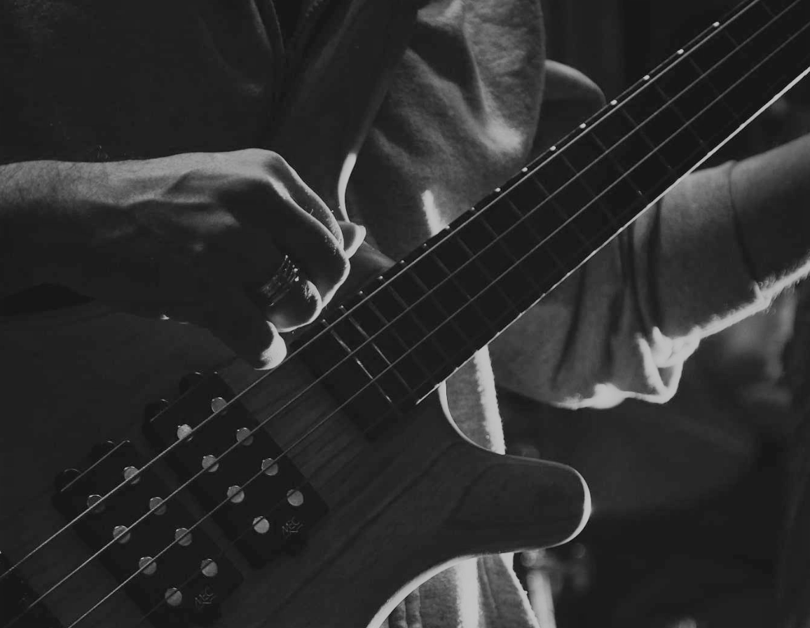
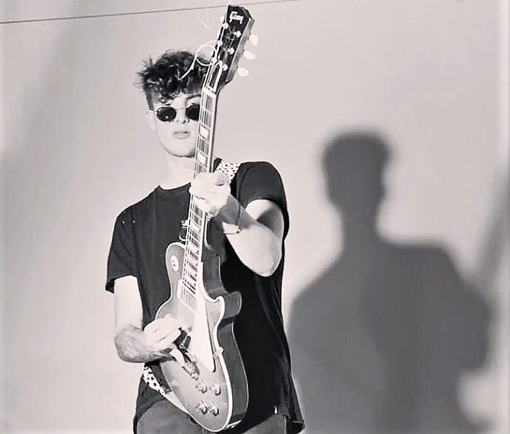

Integrantes
Felipe Infante
Bajista
Nació el 20 de agosto de 1999 en el barrio de Caballito, Ciudad Autónoma de Buenos Aires, Buenos Aires. Asistió a la Scuola Italiana Cristoforo Colombo, lugar donde conoció a Alessio Ambrosio en una clase de guitarra. Infante le propuso a Urie unirse como guitarrista a su proyecto de banda.
Alessio Ambrosio
Guitarrista
Nació el 5 de septiembre de 1999 en la ciudad de Nápoles, Nápoles, Italia. A sus 10 años de edad se muda a Buenos Aires, donde asiste a la Scuola Italiana Cristoforo Colombogh School. Años más tarde, conoce a Felipe Infante en una clase de guitarra, quien le propone formar parte de una banda.
Fabrizio Lisotto

Baterista
Nació el 28 de mayo del 2000 barrio de Villa Crespo, Ciudad Autónoma de Buenos Aires, Buenos Aires. Asistió a la Escuela ORT, lugar donde se apasiona por la percusión. Luego conoce a Felipe Infante en el Club de Música durante una sesión libre. Este lo invita a formar parte de su proyecto con Ambrosio.